你将获得什么
- 一个可用的 Smart Import 插件
- 插件设置页与依赖检测入口
- 一次真实的首次导入结果
Smart Import Installation Guide
一份面向普通用户的图文安装指南，按真实演示路径还原从 0 到 1 的安装过程：打开第三方插件、安装 BRAT、接入 GitHub 仓库、启用 Smart Import，并完成首次导入。
Before You Start
md、txt 可直接导入docx / pdf / pptx / xlsx / xls 需要 markitdownpython3、tesseract.doc 建议安装 LibreOfficeStep 01
新建或打开一个干净的 Vault 后，进入 设置 → 第三方插件。第一次使用时，Obsidian 会提示第三方插件存在数据与隐私风险。这里要做的不是跳过，而是明确地关闭安全模式。
对普通用户来说，这一步是整个流程里最常见的第一个卡点。手册里建议直接告诉用户： 只安装你信任的插件，并优先使用公开仓库和社区常见方案。
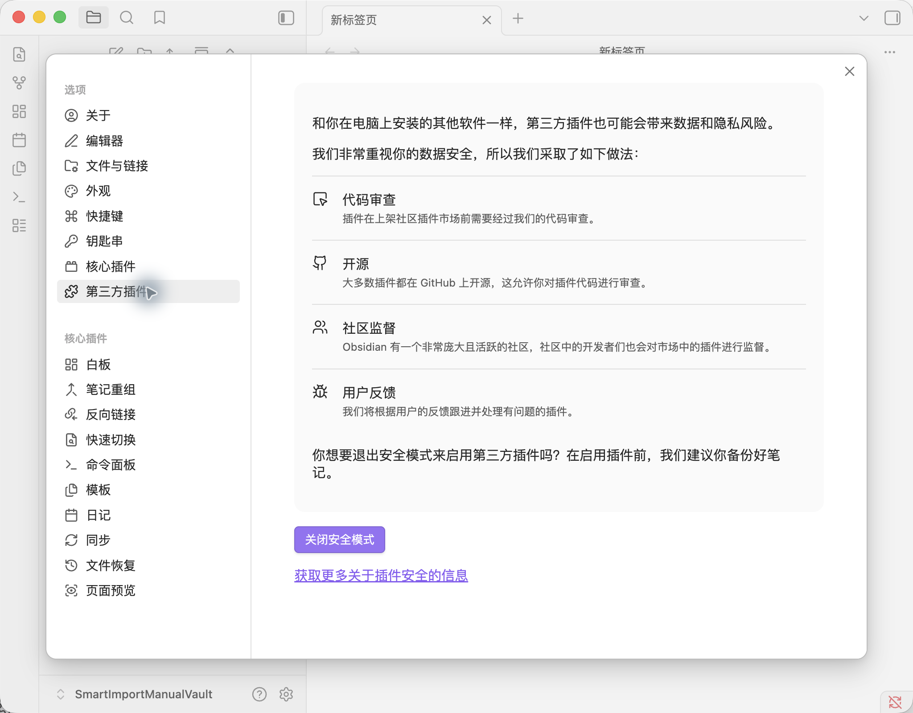
Step 02
安全模式关闭后，点击 浏览 打开社区插件市场。当前 Smart Import 的推荐安装方式是先装 BRAT，再由 BRAT 拉取 GitHub 仓库。
这也是为什么手册不直接从“搜索 Smart Import”开始，因为当前最稳定的用户路径并不是官方目录搜索，而是 BRAT 安装 beta 插件。
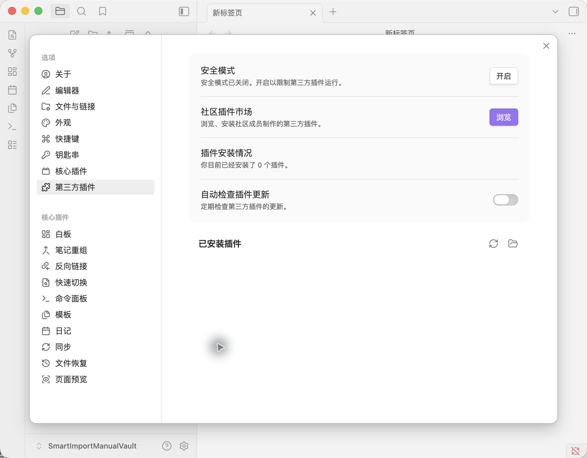
Step 03
在搜索框里输入 BRAT，然后打开它的详情页并点击 安装，安装完成后再点击 启用。
BRAT 的作用很简单：它负责把 GitHub 上的测试版插件拉进你的 Vault， 并保持更新。对于还没进入官方目录、或者需要体验 beta 版本的插件，它是最省心的安装方式。
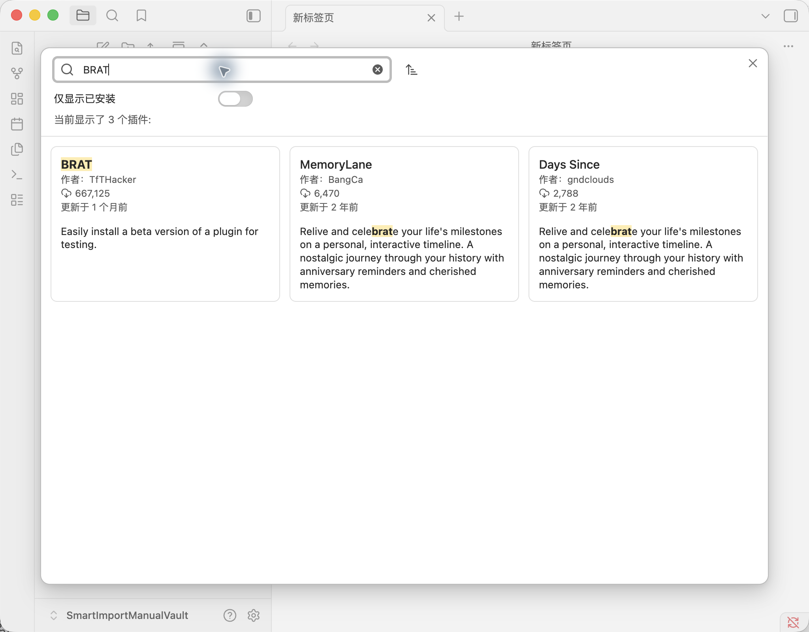
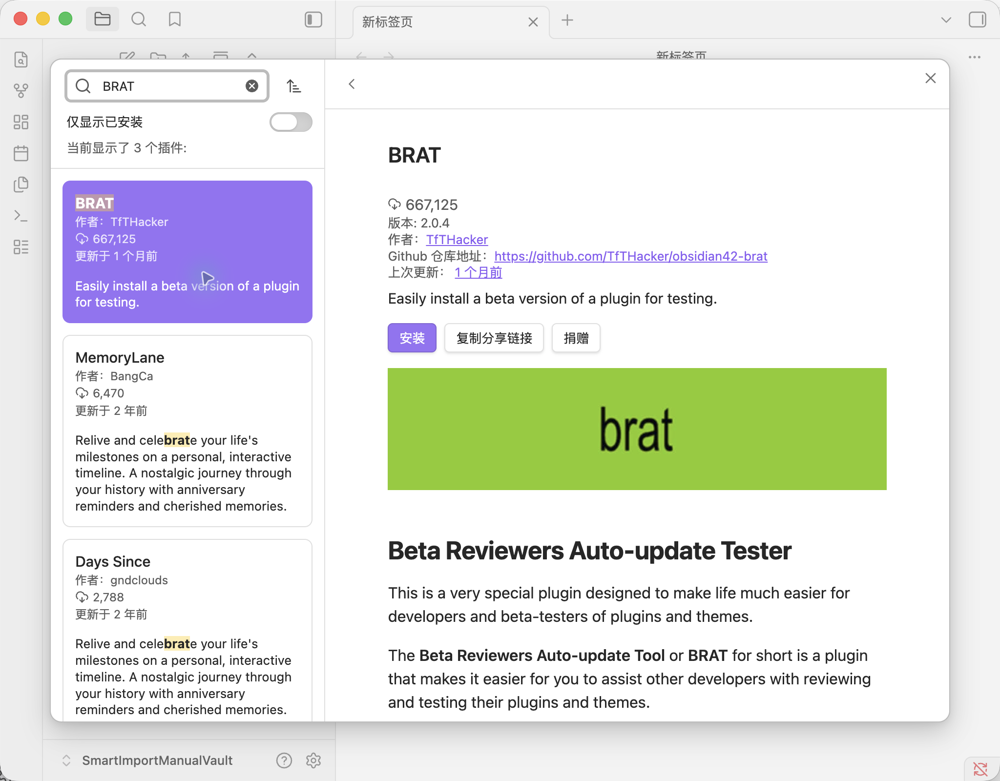
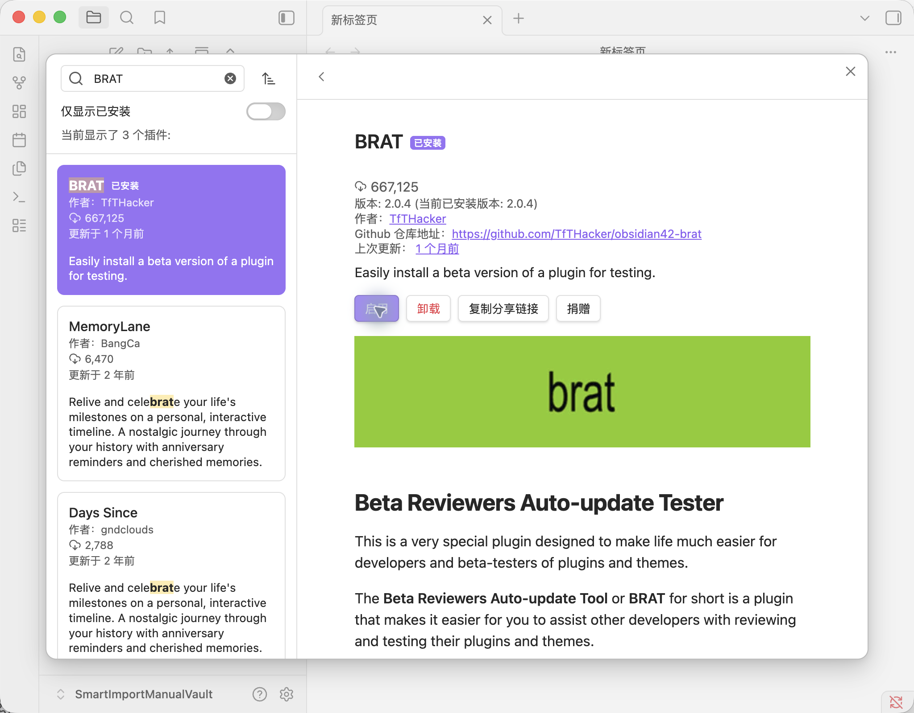
Step 04
启用 BRAT 后，点击左侧工具栏里的 BRAT 图标，选择第一项： Add a beta plugin for testing。
在弹窗里填入 Smart Import 仓库地址：
https://github.com/0126-hash/obsidian-smart-import，
版本选择 Latest version，并勾选
Enable after installing the plugin，最后点击
Add plugin。
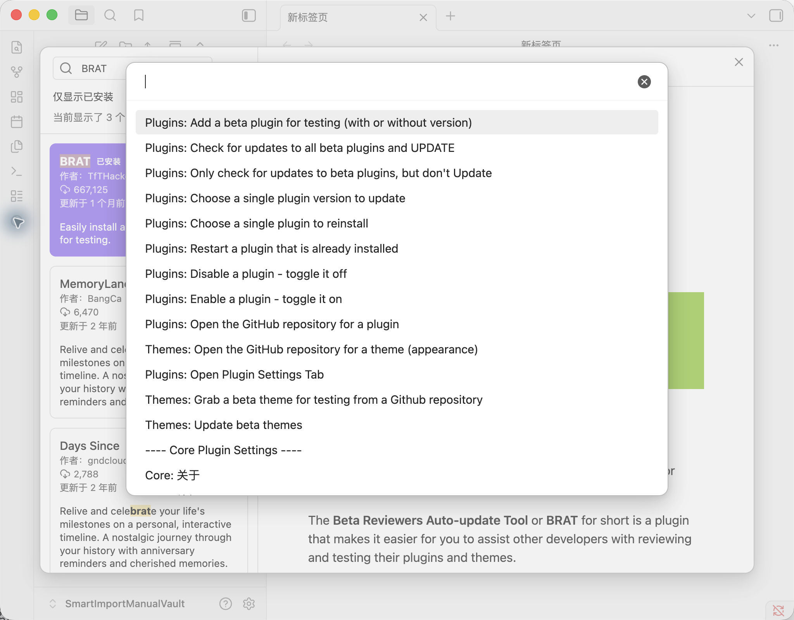
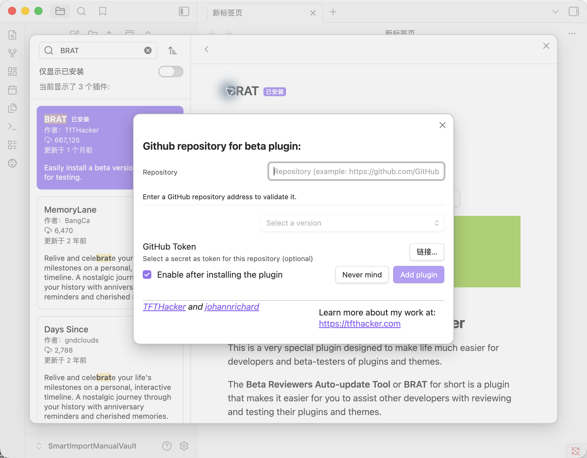
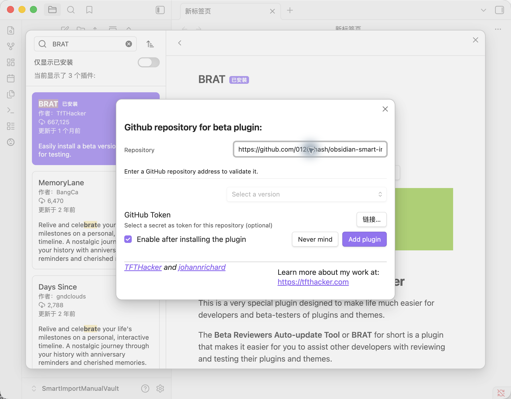
Step 05
安装完成后，回到 设置 → 第三方插件，你会在已安装插件列表里看到 Smart Import。
如果它的开关已经打开，说明插件已经可以工作。此时左侧设置栏也会多出 Smart Import 的专属设置项，左侧工具栏也会出现 打开文件管理 的入口。
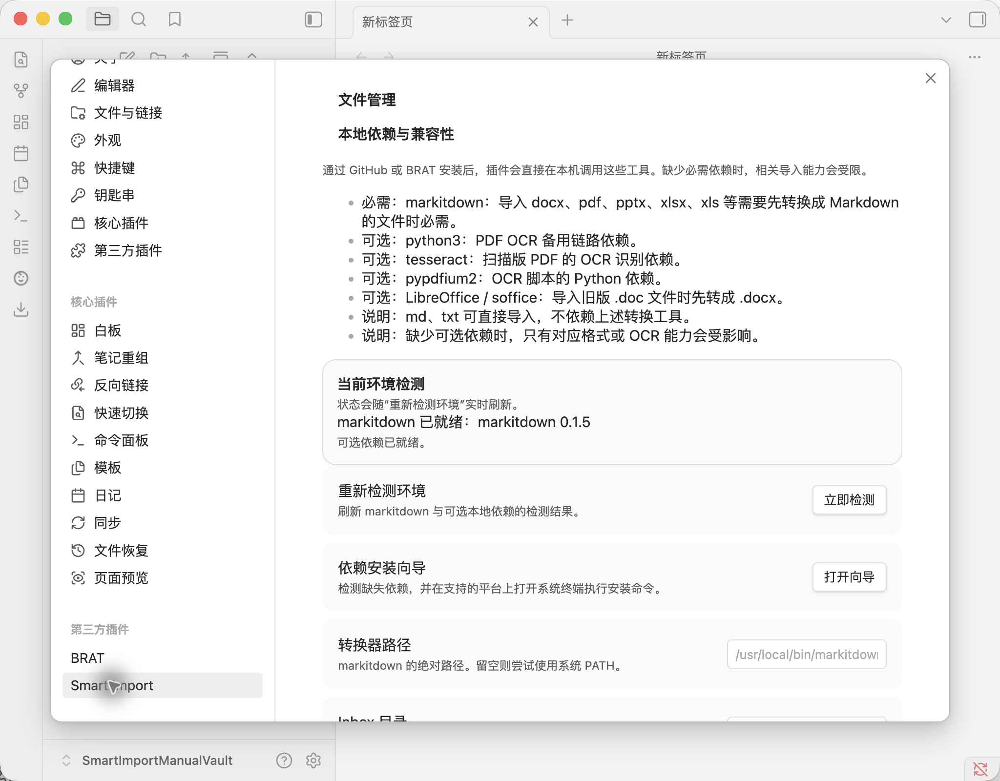
Step 06
进入 设置 → Smart Import，先看两件事：
Inbox
对大多数新用户来说，第一次安装后不一定要立刻装完所有依赖。你可以先用
txt 或 md 验证插件链路已经打通，再根据需要补
markitdown、OCR 或旧 Office 兼容依赖。
Step 07
如果你目前只打算导入 txt 或 md，这一步可以先跳过。
但如果你接下来要导入 docx、pdf、
pptx、xlsx 或扫描版 PDF，就建议把依赖一次装齐。
markitdown：负责把 docx、pdf、pptx、xlsx 等文件转换成 Markdownpython3：OCR 备用链路的运行环境tesseract：扫描版 PDF 的文字识别引擎pypdfium2：OCR 脚本读取 PDF 页面的 Python 依赖Homebrewpython3 和 tesseractmarkitdown 和 pypdfium2/bin/bash -c "$(curl -fsSL https://raw.githubusercontent.com/Homebrew/install/HEAD/install.sh)"brew install python tesseractpython3 -m pip install --upgrade pip
python3 -m pip install markitdown pypdfium2python3 --version
tesseract --version
markitdown --version
python3 -c "import pypdfium2; print(pypdfium2.__version__)"
如果 markitdown --version 提示找不到命令，先关闭并重新打开终端；
如果仍然找不到，就回到 设置 → Smart Import，把
转换器路径 手动填成你本机的 markitdown 绝对路径。
Step 08
点击左侧工具栏的 打开文件管理，再点击
选择文件。这份手册用一个简单的
txt 文件作为演示输入，原因是它不依赖额外转换工具，最适合做首次验证。
选中文件后，Smart Import 会先弹出一层 导入确认界面，让用户检查目标目录、是否保留原件，以及识别到的文件类型。确认无误后，点击 确认导入。
导入完成后，Obsidian 会自动打开生成的 Markdown 笔记，右侧活动流里也会出现一条新的导入记录。看到这一步，就说明插件已经正式可用了。
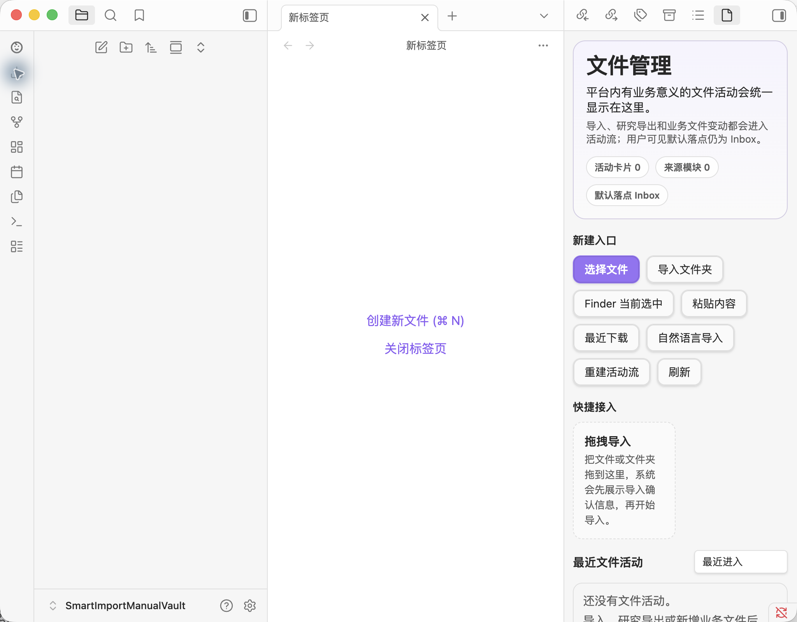
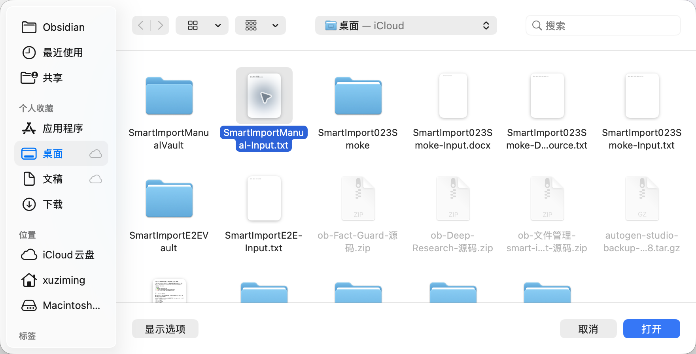
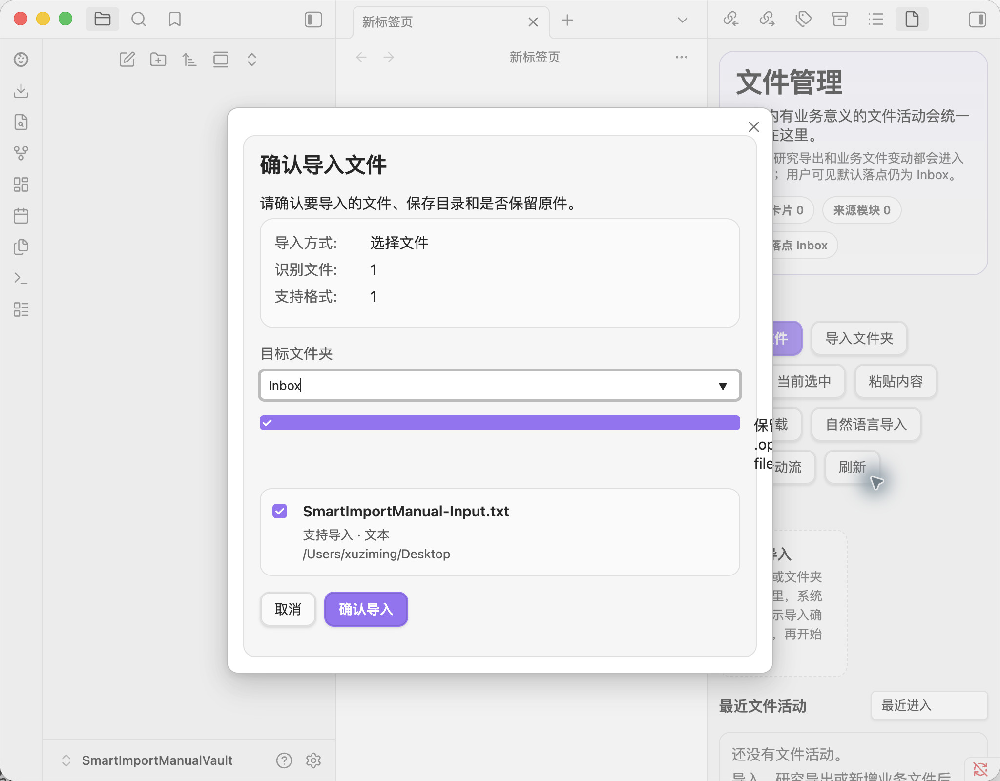
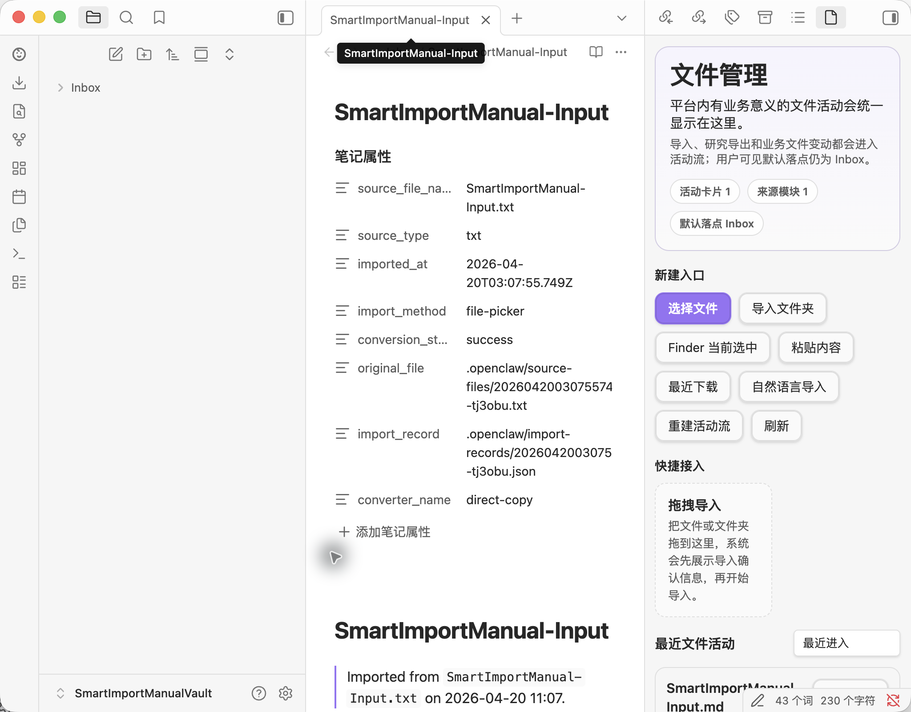
FAQ
这份手册以当前最稳定的用户路径为准，因此主线使用 BRAT。等官方社区目录路径完全可用后，再补一版“官方搜索安装”的精简流程即可。
因为这些格式需要先转换成 Markdown。最常见的必需依赖是
markitdown；扫描版 PDF 的 OCR 还会依赖
python3、tesseract 和
pypdfium2。
建议先用 txt 或 md，因为这两种格式最稳定，不受本地转换器影响。确认插件链路没问题后，再挑战复杂格式。
如果勾选“保留原件”，原文件会保存在 Vault 内的
.openclaw/source-files/ 目录中，Markdown
笔记则默认写入 Inbox。
Done Checklist
在 设置 → 第三方插件 中，能看到 Smart Import 并且开关已打开。
左侧设置栏里已经出现 Smart Import，并且能打开依赖检测和安装向导。
导入一个 txt 或 md 文件后，Obsidian 能自动打开生成的 Markdown 笔记。
如果你接下来要导入 docx、pdf、pptx 或扫描件，再回到设置页补装
markitdown、OCR 和旧 Office 兼容依赖即可。